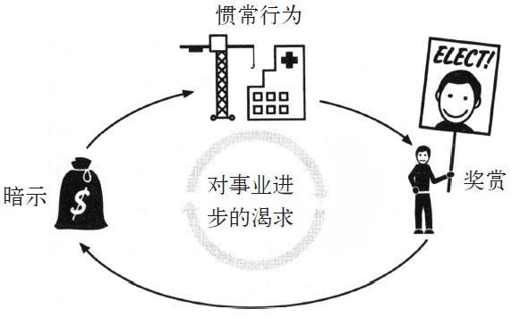
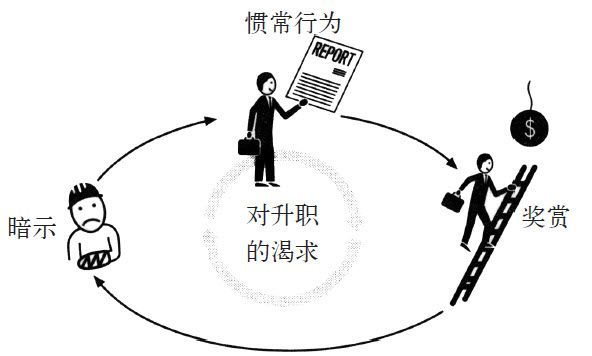

1987年10月狂风大作的一天，一群杰出的华尔街投资者和股票分析师聚集在曼哈顿一家奢华酒店的舞厅里，准备会见美国铝业公司的新总裁。近一世纪以来，美国铝业公司（简称美铝）的产品种类丰富，从好时巧克力的包装箔片和可口可乐公司的易拉罐金属，到人造卫星用的衔接螺栓，可谓无所不包。
美铝公司的创立者在一个世纪前就发明了一套熔融铝金属的工序，自那以后公司就成为全球最大的铝业公司之一。这天在场的听众中，很多都是在美铝股票上投资了上百万美元并从中得到了稳定回报的人。然而，1986年就有投资者开始抱怨，说美铝公司一次又一次地出现管理失误，在竞争对手抢走顾客和利润时，却不理智地打算拓展新产品的生产线。
因此在美铝的董事会宣布要更换公司领导时，投资者们都显然松了口气。然而当他们得知人选是名叫保罗·奥尼尔的前政府官员时，又开始担心起来。华尔街的人很多都没听说过他的名字。当美铝安排在曼哈顿舞厅进行这场会面的时候，所有的大股东都要求出席。
离中午还有几分钟时，奥尼尔出现了。他51岁，身穿有细条纹图案的灰色西服，打着亮眼的红色领带。虽然头发花白，但身板笔直犹如军人，而且步伐有力，笑容温和。整个人看上去威严可靠、自信迷人，有美国总统的派头。
接着他开口说话了。
“我想和你们谈谈工人的安全问题。”他说，“每年很多美铝工人都会严重受伤，令工厂不得不停工一天。我们的安全记录比全国的一般水平要高，而且我们的员工是经常和温度高达1 500摄氏度的金属以及能砍掉人手臂的危险机器打交道的人。现在还不够好，我的目标是让美铝成为全美国最安全的公司。我要让工伤率降为零。”
听众都被弄糊涂了。新总裁就职会议一般都有一套固定的模式：先是新总裁作自我介绍，编个自嘲式的玩笑，比如说他在哈佛商学院上课时都是怎么一路睡过来的，然后就是承诺会大力提高利润，降低成本。接着就是抨击税收、商业规则，有时候还附带一腔热情，暗示他是亲身经历过离婚法庭，和律师打过交道的。最后，会议以一大堆“强强联合”、“规模优化”、“合作竞争”等套话结束，然后大家就能回到各自的办公室，再一次无须担心资金会出现问题。
奥尼尔没有提及利润或是税收，也没有谈到“利用结盟获得双赢的强强联合市场优势”。从他关于工人安全的谈话来看，在座的投资者都意识到奥尼尔可能偏向监管，更糟糕的是，他还可能是个民主党人。这简直让人不敢想象。
“在我深入讲述之前，”奥尼尔说，“我想指出这间房间的安全问题。”他走到舞厅的后面说，“后面这里有好几扇门，如果不幸发生火灾或者其他意外，你们应该保持冷静走出门外，下了楼梯到大厅后，离开酒店。”
沉默，唯一的噪音只有窗外传来的汽车声。安全问题？防火通道？这是开玩笑吗？听众中有一位投资者知道奥尼尔60年代时在华盛顿待过，他暗想这人肯定是吸毒过多了。最终，有人举手问航空部门的存货问题，另一个人则问到公司的资金比率问题。
“我不知道你们有没有听清我的话，”奥尼尔说，“如果你们想知道美铝现在的经营状况，就需要看看美铝的工伤数字。如果我们成功将受伤率降下来——这不会是你们从其他总裁那里听来的鼓舞士气的话或者其他废话的功劳，而是因为公司的每个员工决定成为公司成功的重要一环，他们已经在致力创造出一个杰出的习惯。安全会是整个公司竭力改变习惯并取得进展的一种标志。那才是评价我们的标准。”
当听完新总裁的那番话，屋里的投资者几乎要吓得夺门而走。其中一个小跑下到大堂，找到一个投币式电话，打给他最大的20个客户。
“我说，‘董事会找来了个疯狂的嬉皮士，他这是要搞砸公司的，’”那个投资者和我说，“我命令他们要抢在房间里其他人之前立刻卖掉手头的股票。
“这真是我事业生涯中出的最馊的一个主意。”
奥尼尔就职“宣言”发表还不到一年，美铝就取得了空前的利润。在2000年奥尼尔退休的时候，公司每年的净收益是他上任前的５倍，股票市值达到270亿美元。一个人如果在奥尼尔上任那天投资100万美元给美铝，在奥尼尔领导公司期间在股息上就相当于赚了另一个百万，而到奥尼尔离职的时候，他手上的股票价值将涨到原来的5倍。
而且，在蓬勃发展的同时，美铝也成为了世界上最安全的公司之一。在奥尼尔上任之前，美铝的所有工厂几乎每星期都会发生至少一桩工伤意外。但他的安全计划实行后，一些设备能运行多年，没有因为任何一个人受伤而要停工一天。公司的工伤率降低到美国平均水平的1/20。奥尼尔是怎么将一个巨型臃肿、危机重重的公司转变成一个利润和安全兼收的企业的呢？
答案是通过破坏一个习惯，然后观察整个公司会因此连带出现什么样的变化。
“我意识到我必须改变美铝，”奥尼尔告诉我，“但你不能命令人们去改变。人的大脑并不是那样工作的。所以我决定先集中在一件事情上。如果我一开始先破坏某件事的习惯，它就会扩展到整个公司。”
奥尼尔相信一些习惯具有引起连锁反应的能力，当它们扩展到整个组织时，会引起其他习惯的改变。换言之，一些习惯比起其他习惯在重塑商业和生活方式上更有影响力，它们就是“核心习惯”，影响着人们的工作、饮食、玩乐、消费和沟通方式。核心习惯能启动一个进程，久而久之将改变一切。
核心习惯说明成功并不需要做对每一件事情，而是要辨别出一些重要的优先因素，并将其变成有力的杠杆。书中的第一章节介绍了习惯的运作方式，以及它们的形成和改变过程。然而，善用习惯要从哪里着手呢？问题的答案在于了解核心习惯：最重要的习惯是那些自身变化后，会驱动和重塑其他行为模式的习惯。
核心习惯解释了迈克尔·菲尔普斯成为奥运冠军，以及一些大学生比同龄人更优秀的原因。它们解释了为什么一些人减肥多年没有成效，却在自己的工作效率提高，同时又准时下班回家和孩子共聚晚餐的情况下突然减了40磅。这些核心习惯也使美铝成为道琼斯指数中表现最佳的股票之一，使公司成为全球最安全的工作场所之一。
当美铝公司第一次和奥尼尔商谈请他当CEO的事情时，他不确定要不要接受。他已经赚了很多钱，而且他的妻子很喜欢他们居住的康涅狄格州。他们对美铝总公司所在的匹兹堡市一无所知。但在拒绝之前，奥尼尔要求给他点儿时间考虑。为了帮自己做出决定，他列出了一张清单，开始研究若接受职位应优先考虑哪些因素。
奥尼尔一直以来都很喜欢列清单的方法，这也是他安排自己生活的方法。在加州州立大学弗雷斯诺州分校上学的时候，他用三年多的时间完成了学业，而且每周会兼职30个小时。那时候，他列了一生要实现的目标清单，其中很靠前的就包括“出人头地”。1960年毕业后，在一个朋友的鼓励下，他申请联邦实习生，和30万考生一起参加了政府的招聘考试。其中3 000人进入面试，最后300人获得了工作，奥尼尔就是其中之一。
他从退伍军人管理局的中层管理人员做起，被要求学习电脑系统。无论何时，奥尼尔总是在列清单，记录一些项目比其他项目成功的原因，又或是哪些承包商交货及时，哪些拖延。他每年都得到晋升，同时，他也因为所列清单中总有一针见血解决问题的事项而为人所称道。
在20世纪60年代中期，华盛顿对拥有这些技巧的人的需求量很大。罗伯特·麦克纳马拉当时新聘请了一批年轻数学家、统计师和电脑程序员来重整美国国防部。约翰逊总统也想要一些高材生帮自己。于是奥尼尔受聘到华盛顿权力最大的部门之一，这就是后来的管理和预算办公室。不到10年，在他38岁的时候，他被升任副局长，一下子跻身到为华盛顿最具影响力的人士之列。
那正是奥尼尔真正开始学习组织习惯的时候。他的第一项任务是建立一个分析架构，去研究政府花在医疗保健上的开支。很快他发现，政府的努力本来应该按逻辑规则和深思熟虑后的优先决定去发展，最后却被奇怪的组织流程牵着鼻子走，而这点和习惯的运作方式非常类似。官员和政治家做出的并不是决策，只是为了得到晋升或者连任等奖赏而对暗示自动地产生惯常行为。这正是在上万人和数十亿美元中扩散开去的习惯回路。
比如说，美国国会在“二战”后制定了一个建设社区医院的计划，这个计划在25年后还在执行，每当法律制定者将医疗保健基金分配下来，官员就马上继续建造医院。新医院所在城镇本来并不一定需要那么多病床，但官员们觉得这无关紧要。真正紧要的是，这能成为一个政治家在巡回选举演说拉票时，可以提及的一桩大
工程。

“联邦工作人员会花好几个月争论窗帘是用蓝色还是黄色，考虑病房要装一台还是两台电视，设计护士站，都是些毫无意义的破事。”奥尼尔对我说，“大多数时候，没人问过这个镇到底是否还需要一家医院。官员们都陷入了一个习惯，用建造医院来解决每个医疗问题。因为那样某个国会议员就能说：‘这里的工程就是我建设的！’这根本毫无意义，但所有人都一而再、再而三地重复这件事。”
研究人员发现他们察看的每个组织或者公司都存在组织习惯。“个人有习惯；组织则有惯例，”学者杰弗里·霍奇森在他整个职业生涯中致力于研究组织的行为模式，他在书中写道，“惯例是在组织层面和习惯类似的东西。”
对于奥尼尔来说，这些习惯看起来很危险。“基本上我们总让一个没有经过实际思考的过程取代了真正的决策，”奥尼尔说，“但在另一些机构，在变化悬而未决的时候，良好的组织习惯则在造就成功。比如说美国国家航空航天局的某些部门，正通过人为建立组织惯例，鼓励工程师敢于冒险来改善机构现状。当无人火箭在起飞时爆炸，部门领导依然给予赞赏，那样每个工作人员都会明白他们部门虽然尝试失败了，但至少他们尝试过了。最后，在每次备受鼓励的任务控制中，一些宝贵的东西迸发出来，形成了组织习惯。再比如1970年创立的环境保护局，它的第一任管理者威廉·拉克尔夏斯特意地设计了组织习惯，鼓励他的调整者大胆执法。当律师征求提出诉讼或者执法许可的时候，会经过一个许可审批的过程，默认都是授权执行。这传达的信息很明显：在环境保护局，敢于冒险会得到奖赏。到1975年，环境保护局每年要发布1 500多条新的环境条例。”
“每次我去看政府的不同部门，都会发现部门的习惯说明了部门的成功或失败。”奥尼尔告诉我，“最好的那些部门懂得惯例的重要性，而最差的那些部门，它们的领导从来不考虑这个，还疑惑为什么没人听他们的命令。”
1977年，奥尼尔已经在华盛顿待了16年，他决定是时候离开了。他每天工作15个小时，每周工作7天，他的妻子厌倦了总是一个人照顾4个孩子。奥尼尔辞职后，转职到全球最大的纸浆纸业公司——美国国际纸业公司，最终成为了公司的总裁。
在那之前，他的一些政府老朋友在美铝公司的董事会任职。当美铝需要一个新总裁时，他们就想到了他。这就是上面提到的他为接受这份工作列优先考虑因素清单的背景情况。
美铝当时在苟延残喘。有人抨击美铝的工人动作迟钝，产品质量低下。但在奥尼尔的清单的顶部，他所列的不是“质量”或者“效率”。像美铝这样规模庞大、历史悠久的公司，你不可能指望随便一下就能让每个人更努力工作，生产更多产品。前任总裁曾尝试下令改善，但结果导致1.5万名员工的罢工——事情弄得很糟，工人将装扮成经理的假人或经理的肖像画，带到停车场焚烧。经历过那段时间的人告诉我：“美铝并不是一个幸福的家庭，它更像离经叛道的曼森一族，只不过附带熔融金属而已。”
奥尼尔认为如果他接手了这份工作，他要考虑的首要要素，必须是工会和高管的所有人都认同其重要性的因素。他需要一个焦点将人们团结在一起，能为他提供改变人们的工作方式和沟通方式的力量。
“我着眼于基层，”他对我说，“所有人都应和来上班时一样平安下班，不对吗？不应该让员工担心自己可能为了养家糊口而丢掉性命。改变所有人的安全习惯，这就是我决定要重点关注的事情。”
于是在清单顶部，奥尼尔写下了“安全”，并设立了一个大胆的目标：零工伤。并不是工厂零工伤，而是完完全全的零工伤。这将是他不惜任何代价要达到的承诺。
于是奥尼尔决定接受这份工作。
上任数月后，奥尼尔来到田纳西州的一家熔融工厂，对聚首一堂的工人说：“我很高兴今天能来到这里。”但并不是每件事都进展顺利。华尔街的人依然惴惴不安，工会的人也忧心忡忡。另一方面，美铝的一些副总裁对公司越过自己找个外人来当总裁也感到愤愤不平，但奥尼尔依旧坚持谈论工人安全的问题。
“什么事情都有商量余地。”奥尼尔说。当时，他参观美铝在美国国内的一些工厂，之后他前去参观美铝在其他31个国家设立的分厂。
“有一件事我绝不会让步，那就是安全。我今后不想听你们辩解说公司没做足安全保护措施。如果你要就此和我争论的话，你赢不了我的。”
奥尼尔的方法的明智之处在于，没人会想和他争论工人的安全问题。工会长年以来一直为更好的安全规则在抗争。管理层也无意争论这个问题，因为他们知道工伤就意味着产量降低，士气低迷。而真正让他们不解的是，奥尼尔计划将受伤率降为零，这可是美铝历史上最激进的重整计划。奥尼尔相信，保护美铝工人的关键在于，首先要了解事故发生的原因。而要了解这个原因，就必须去了解生产过程中出错的地方，也就需要引进人才，教导工人质量控制和最具效率的生产流程。而正确的工作方式也意味着更安全的工作方式，从而更容易避免错误的
发生。
换句话说，要保护工人，美铝就必须成为全球最好、最精简的铝业公司。奥尼尔的安全计划，实际上模仿了习惯回路。他找出了一个简单的暗示：员工受伤，然后设定了一个自动的惯例：无论何时有员工受伤，分部总裁都要在24小时内向奥尼尔报告，并给出一个方案保证事故不会再次发生。之后还有奖赏：只有那些遵守这个安排的人才会得到晋升。

分部总裁非常忙碌，要在事故24小时内联系到奥尼尔，他们就要在事故发生时马上从副总裁那里得知事故的情况。而副总裁也就要和基层经理保持经常联络。于是，基层经理也要求工人一发现问题就报告，并列出一张改善建议的清单。这样一来，如果副总裁问到解决方案时，就已经准备好了一堆各式各样的建议。要实现上述这些，每个分部都必须建立新的沟通体系，以便最低层的工人能尽快将建议提交给最高层的管理人员。于是公司死板的等级体系必须全部改变，以落实奥尼尔的安全计划。实际上，奥尼尔正在建立新的企业习惯。
当美铝的安全模式变化后，公司的其他方面也会以迅猛的速度发生改变。工会几十年来对诸如计算单个工人的生产效率之类的规则一直持有反对态度，如今工会突然都接受了，因通过这种计算，能帮助大家发现生产过程中和其他不一致的有安全隐患的部分。同时，经理们一直拒绝的东西，比如允许工人关闭运作过快的生产线，现在也都得到了批准，因为这是事前阻止事故发生的最好办法。这一系列变化的幅度非常大，员工们发现安全习惯已经融入了他们生活的方方面面。
“两三年前，我在办公室，透过窗户看到第九街大桥有一帮人没按照安全规程作业。”美铝现任的安全负责人杰夫·肖基说道。这些人中有一个站在桥的护栏顶部，另一个紧握着他的腰带，而没有使用安全吊带或者绳索。“他们的公司和美铝一点儿关系都没有，但我想都没想，就跳起来，跑下5层楼，走到桥下对他们说，喂，你们这样是不要命啦，你们得用安全吊带和安全装置。”那个人解释说他们的主管忘了带设备，于是肖基就打电话给职业安全和健康管理局，举报了那名主管。
“另一个高管和我说，有天他在附近的道路挖掘工地，看到他们没用移动式沟渠支撑框，就停下来给他们上了一堂有关正确施工规程——沟渠作业安全的课。那时正是周末，他把车停下，孩子还在车后座上。他也觉得很奇怪，但这正说明了我们现在已经潜意识地有了这些行为。”
奥尼尔从来没承诺过，他对工人安全问题的重视会增加美铝的利润。然而，当他制定的新惯例在公司实行后，产品成本降下来了，质量也上去了，产量也出现了激增。如果熔融金属飞溅伤人，那他们就重新设计能减少受伤事故的浇注系统。而金属飞溅减少，也意味着浇注时金属材料浪费的减少。如果一台机器总是出现故障，他们就换一台，这也就减少了坏的传动装置绞断员工手臂的风险。而这也让产品质量得到了提高，因为美铝发现，机器故障是产生次品铝的重要原因。
研究人员发现，除了工业生产，在个人生活等很多方面都有类似的情况。
举个例子来说，过去10年有研究人员调查运动对日常行为的影响。当人们开始养成运动的习惯时，即使是一周一次的运动，他们也会不知不觉改变其他与之无关的行为模式。通常来说，做运动的人会吃得更香，工作更有效率。他们更少吸烟，对同事和家人更有耐心。而且更少使用信用卡，压力也更小。研究人员还没弄清楚这种变化的原因，但对于很多人来说，运动是引发广泛变化的核心习惯。美国罗德岛大学的研究人员詹姆斯·普罗查斯卡说：“运动有很大影响，它包含某些让其他好习惯更易形成的因素。”
研究记录表明，经常一起吃饭的家庭的孩子，更擅长做功课，学业成绩和情绪控制力更好，更有自信心。每天早上整理床铺，与更高的工作效率、更强的幸福感以及控制预算能力有关。事实上，并不是家庭一起用餐或者整齐的床铺带来好成绩或理智的开支，而是这些基本的变化会引起连锁反应，带动其他好习惯形成。
如果你注重改变或培养核心习惯，就能引发广泛的变化。然而，核心习惯并不容易发现，你得先知道从哪里着眼。寻找核心习惯意味着找出某些特性。核心习惯能为人提供学术文献中所称的“小成功”。它们通过建设新的结构以利于其他习惯的形成，并在变化扩散之处建立起某些文化。而奥尼尔和其他人一样，发现理解这些原则和运用它们不是一回事，这需要一点智慧。
2008年8月13日北京时间清晨6点30分，迈克尔·菲尔普斯的闹钟响起，他爬下在北京奥运村的床，马上开始了他一天的日程。
他穿上运动裤，准备去吃早餐。这星期以来他已经赢得了3枚金牌，这让他的游泳生涯所获金牌数达到了9枚，而他这天将有两场比赛。7点钟前，他已经来到餐厅，吃着平时吃的比赛餐——鸡蛋、燕麦粥和4支能量饮料，这些东西包含了他接下来16个小时要消耗的6 000多卡路里的热量。
菲尔普斯第一场比赛是他最擅长的200米蝶泳，安排在10点。比赛开始前两小时，他开始做准备活动，先是手臂，然后是背部，然后又到脚踝。他的脚踝很灵活，能弯曲超过90度，比芭蕾舞女演员踮起脚尖还要厉害。在8点半时，他跳进池里，开始他第一轮热身，先是800米混合式，接着是600米的打腿练习，400米边游边在两腿间拉伸一个浮标，200米的划臂练习，和几组25米冲刺以提高心率。这一连串的热身活动花了45分钟。在9点15分时，他出了泳池，花了20分钟使劲拉扯才换好那套紧身的第四代鲨鱼皮泳衣。然后他戴上耳机，调大音量，听他每场比赛前必听的嘻哈音乐，耐心地等待着。
菲尔普斯在7岁时开始游泳，以消耗掉能让他母亲和老师几乎要疯掉的过剩精力。当地的一位名叫鲍勃·鲍曼的游泳教练看到他修长的躯干和大手，以及稍短的腿部（这样会减少游泳的阻力），认为菲尔普斯能成为游泳冠军。但菲尔普斯很情绪化，他在比赛前没法平静下来。他父母离异，自己没法处理好压力。鲍曼买了一本放松练习的书，让他母亲每晚大声读给他听。这本书上有句话：“将手指握成拳头，然后放开，想象紧张就这样消失掉。”这句话让菲尔普斯身体的每部分绷紧再放松，直到他入睡。
鲍曼相信，对于游泳选手来说，胜利的关键在于培养正确的惯常行为。他知道菲尔普斯有非常适合游泳的体格，但每个能进到奥运会的选手都有完美的肌肉组织。鲍曼也能看出菲尔普斯年纪虽小，但已有足够让他成为一名优秀选手的执着信念。但同样，所有的精英选手也同样拥有取胜的执着信念。
鲍曼能教给菲尔普斯的是，让他成为泳池里精神方面最强选手的习惯，正是这点让菲尔普斯从众多竞争者中脱颖而出。他不需要控制菲尔普斯生活的每一方面，他只需要着重于一些和游泳毫无关系，但和塑造正确思维有关的因素。他设计了一系列动作，帮助菲尔普斯在每场比赛前保持平静集中，找出在这种以毫秒取胜的竞技运动中能起到决定性作用的细微优势。
例如，在菲尔普斯十几岁的时候，每次练习完，鲍曼都会让他回家后“看录像带”——在入睡前看，在醒来时又看。其实这录影带并不是真正的录影带，而是对于完美比赛的脑内想象。于是每晚入睡前和每天早上醒来时，菲尔普斯都会想象自己跳进泳池后完美泳姿的慢动作。他会想象自己在水中划臂，触到池壁后，转身以及最后冲线。他会想象身后的水痕，嘴巴划过水面后从嘴唇滴落的水珠，强到似乎要扯走他泳帽的水的力量。他就这样躺在床上，闭上眼睛，“看”完整个比赛，一遍遍地看最小的细节，直到他用心记住每一秒。
在训练中，当鲍曼让菲尔普斯以比赛的速度游的时候，鲍曼就会喊：“让自己和录像带里一样！”然后菲尔普斯就会尽自己最大的能力逼自己前进。当他在水中穿行时，录像带就像慢放一样，他已在头脑里将这一切重复了成千上万遍，就像死记硬背，但这样做收到了效果。他游得越来越快，最后只要鲍曼在赛前喊一声“把录像带准备好”，他就会冷静下来，在比赛中取胜。
一旦鲍曼在菲尔普斯生活中建立起一些核心的惯常行为，其他的所有习惯，比如饮食和训练时间表、准备运动和睡眠习惯等，都会自动各自就位。而这些习惯如此有效，能成为核心习惯的核心原因就是学术文献中所称的“小成功”。
小成功是关键习惯引起广泛变化这个过程的一部分。大量的研究表明，小成功在实现胜利过程中，有着巨大的影响力。康奈尔大学的一位教授在其1984年出版的著作中写道：“小成功其实是细微优势的稳定运用，一旦一个小成功完成了，就会推动下一个小成功的出现。”小成功能够带来改造性的变化，因为它能够将细微的优势转变为一种模式，让人们相信更大的胜利即将到来。
例如，20世纪60年代末，同性恋权利组织开展对抗议歧视同性恋的运动时，最初的努力都以一连串的失败告终。他们强烈要求废除控告同性恋的法律，但面对州立法机关还是惨败告终。教师尝试设立课程教育同性恋的青年人，但最后因暗示要接纳同性恋而被开除。因此，同性恋群体要求同性恋不再遭受歧视、警察不再骚扰他们、说服美国精神医学协会不再将同性恋定义为一种精神疾病这些更远大的目标变得遥不可及。
后来，在70年代初，美国图书馆协会的解放同性恋特别小组决定将力量集中在一个较小的目标上：说服美国国会图书馆将同性恋解放运动的相关书籍的分类进行调整，从HQ71-471（不正常的性关系，包括性犯罪）调整到另一个中性的分类。在1972年，国会图书馆收到要求调整分类的信后，同意做出调整，将相关书籍归到新设立的HQ 76.5目录（男性同性恋、女性同性恋——男性同性恋解放运动、关注同性恋权利运动）。这是对书籍分类的这个陈旧组织习惯的小小努力，但影响却是惊人的。关于这个调整的新闻席卷全美国。同性恋权利组织借着这次胜利开创了筹集基金活动。数年以内，公开表明是同性恋的政治人物开始参加加利福尼亚州、纽约州、马萨诸塞州、俄勒冈州的政治竞选，他们中的很多人声称是国会图书馆的决定激励了他们。1973年，美国精神医学协会经过多年的内部争论后，修改了同性恋的定义，它不再是一种精神疾病，这又为州立法律确定歧视同性恋的性取向为违法行为铺平了道路。
所有的一切都是从一个小成功开始的。
杰出的组织心理学家卡尔·韦克说道：“小成功并不会以整齐直接、连续的形式出现，不会每一步都让你确切地感到自己在靠近设定好的目标。更常见的是，小成功零散分布，就像那些微型实验一样，测试关于阻力和机会的深层理论，并发掘出情况有变之前未被察觉的资源和障碍。”
这和迈克尔·菲尔普斯的情况一样。当鲍勃·鲍曼开始让菲尔普斯和他的母亲进行想象和放松的核心习惯训练时，鲍曼和菲尔普斯都不清楚这能有什么用。“我们做了实验，尝试各种东西，直到找到可行的方法，”鲍曼告诉我，“最后我们发现最好就是集中在小成功上，并用它们来激发精神。我们将它们变成了惯常行为。在每场比赛前，我们都会做这一系列的事情，让迈克尔建立起胜利的信心。
“如果你问迈克尔比赛前脑里在想什么，他会告诉你其实什么都没想。他只是按照程序办，更准确地说，是他的习惯在引导他。在比赛开始时，他已经完成了计划的一半以上，而且每一步都取得了胜利。所有的伸展运动跟他计划的一样，热身环节和他想象中的一样，他的耳机按他的期望播放音乐。真正的赛事只不过是他那天早就开始了的行为模式中的一环，他毫无疑问会获得胜利。胜利只是顺其自然发生的。”
让我们回到上述赛事，北京时间上午9点56分，还有4分钟比赛就要开始。菲尔普斯站在跳台后面，用脚尖微微弹跳热身。当广播员念到他的名字时，他和以前的所有比赛一样站上了跳台，和往常一样走下来，和12岁以来每场比赛之前一样，他挥动手臂3次，然后重新站上跳台，摆好姿势，当枪声一响就跳了下去。
菲尔普斯一跳进水里，就发现有不妥。他感觉泳镜里好像有点潮湿，他也不知道是镜子的上边缘还是下面进水了。但比赛已经开始了，他希望泳镜进水不要太严重就好。
到第二折返时，他看东西更模糊了。当他游到第三、四次折返时，泳镜里都浸满了水，池底的白线和池壁上标志着靠近池壁的黑色T字母，他都看不见了。他不知道要划臂多少次才能到岸。对于大多数游泳运动员来说，在奥运会决赛中途视野被遮蔽，这会引起恐慌。
但菲尔普斯很平静。
比赛当天所有事情都按照计划进行了，泳镜漏水只是一个小误差，而且他也预料过这种情况。
鲍曼和菲尔普斯在密歇根州训练时，鲍曼曾经让菲尔普斯摸黑游泳，因为他认为菲尔普斯要准备好面对任何意外。所以菲尔普斯脑中的录像带已经录下了这样的问题，他已经在脑子里演练过要怎么应对这种情况。在开始最后一次折返时，菲尔普斯估算出了他最后一次折返要划臂多少次，可能19次、20次或是21次，他开始在心里数着。他感觉很放松，因为他尽了全力在游。然后到中途时他再次发力，这最后爆发正是他赢过其他对手的撒手锏之一。在第18次划臂后，他开始估计池壁的位置。他能听到人群在欢呼，但因为他看不到东西，他不知道人们是在为谁欢呼。他做了第19次划臂，然后是第20次，但他脑中的录像带告诉他还要再划一次。然后他就做了第21次大幅度的划臂，然后碰到了池壁。这场比赛他把时间计算得很准，当他摘下泳镜，他看到得分板上他名字旁边写着“WR”这个表示世界纪录的两个字母。他又赢得了一枚金牌。
赛后，一位记者问他在看不到东西的情况下游泳是什么感觉，他回答说：“和我想象中的一样，并没有什么问题。”这是充满小成功的一生获得的又一次胜利。
保罗·奥尼尔走马上任美铝CEO 6个月后，一天半夜里接到一个电话。打电话的是亚利桑那州分厂的一个生产经理，他战战兢兢地说一台挤压机发生故障，一个进厂没几个星期的新人积极申请让他来修理，因为这能为他怀孕的妻子拿到医疗保健。他跳过环绕挤压机的黄色安全保护墙，走过机房，发现6英尺的摆动臂的铰链上卡住了一块铝片。他清除了碎片后，机器就重新启动了，摆动臂开始重新做弧形运动，一下子打到了他的头上。他的头骨碎裂，当场死亡。
14小时后，奥尼尔召集工厂所有管理人员以及匹兹堡的高管开了紧急会议。那一整天，他们都在利用图解重演事故，一遍遍地重看监控录像。然后他们发现了导致死亡事故发生的好几个失误，包括两名经理看到死者跳过安全障碍墙却没能阻止他；培训计划中没有明确告诉死者，他不会因为机器故障而受到责罚；没有人告诉他修理前要先报告经理；机器也没有安装当有人进入机房后自动关机的感应器。
“我们是杀害这名工人的凶手，”奥尼尔一脸严肃地和会议人员说，“这次的死亡事故是我的领导无方，监管的各位也要负上责任。”
在座的管理人员都很吃惊。没错，一桩惨剧发生了，但是这种事故在美铝也是不可避免的。美铝本身就是一家员工要处理高温金属和危险机器的庞大公司。美铝高管比尔奥·洛克说道：“保罗是个外行人，他谈及安全问题时也遭到了不少质疑，我们预想他的关注点会持续几个星期，然后他就会转向关注其他事情。但这次会议让每个人都震惊了。他是很认真的，甚至认真到会因为担心那些素未谋面的员工而夜不能眠。此后事情就开始发生改变。”会议后的一周内，美铝工厂里所有安全防护栏都重新涂上明黄色的油漆，而且发布了新政策。经理对员工说，如果觉得机器可能需要维护，那就要敢于报告，而且规章制度上也说得很清楚，这样就不会有人去尝试危险的维修作业。在员工中新树立起的警觉性很快收到了成效，工伤率大幅降低。美铝取得了一次小成功。
接着奥尼尔发话了。“虽然还只是两个星期，但我要祝贺各位成功减少了受伤事故。”他写了一份备忘录，然后在整个公司传阅，“但我们不应该为遵守规章制度或者减少了工伤数字而庆祝，我们应该庆祝我们正在拯救生命。”
工人抄下了这句话，并贴在他们的储物柜里。有人将奥尼尔的画像画在一家熔融工厂的一面墙上，并在下面刻上这句话。正如迈克尔·菲尔普斯的惯常行为和游泳毫不相关，却带来了成功一样，奥尼尔的努力也开始扩大到其他和安全无关的变化，也确实带来了改革性的变化。
“我和那些小时工说，‘如果你的领导没有遵守安全规章，你们就打我家里的电话。这是号码。’”奥尼尔跟我说，“工人们开始打电话过来，但他们不想谈论事故，而是和我说很多他们想到的其他好主意。”比如说，美铝的一家分厂是生产铝墙板的，长年以来盈利不佳，因为管理人员喜欢预测流行颜色，然而难免会猜错。他们会花费上百万美元请顾问挑出可能流行的色彩，但6个月后，当仓库堆满浅“阳光黄”铝墙板时，又突然发现顾客需要“猎人绿”。然后有一天，一个低层员工给了一条建议，奥尼尔马上同意了：如果他们将所有的上漆机分组，那就能更加迅速地拉闸断开染料，更灵活地应对顾客需求的变化。不到一年，铝墙板的利润翻了一倍。
奥尼尔聚焦安全问题带来的小成功，造就了一股各种创意争相涌现的风气。
美铝的一位高管告诉我：“据说这位员工在10年前也提过这个主意，但他一直没告诉过管理层。直到他发现既然我们一直在征求安全方面的建议，不如把其他建议也和我们说说。这次的建议就像中奖的彩票号码一样，给我们带来了很大利润。”
年轻的保罗·奥尼尔在政府部门工作时，需要创建一个用于分析联邦医疗开支的框架，官员最担心的其中一个问题是婴儿的死亡率。美国那时是世界上最富裕的国家之一，但它的婴儿死亡率却比很多欧洲国家和南美的部分地区都要高。特别是农村地区，居然有很多婴儿在一岁前就夭折。奥尼尔的任务就是要查出这个问题的原因。他让联邦其他部门分析婴儿死亡率的数据，每次有人带回来答案，他就要问另一个问题，试图更深入地了解问题的根源。每当有人带着某个发现回到奥尼尔的办公室，他就会询问他们新的问题。他的那股无休无止地想了解更多的干劲，简直能将人逼疯。（“我挺喜欢保罗·奥尼尔，但你出多少钱我都不想再为他工作了。”一位官员告诉我，“他可以将遇到的每一个答复都变成一份要20个小时才能完成的工作。”）
比如说，一些调查表明婴儿夭折最大的原因在于早产，而早产的原因在于妈妈在怀孕期间营养不良。因此要降低婴儿死亡率，改善妈妈的饮食就可以了。这很简单，不是吗？但要防止营养不良，女性就要在怀孕前改善他们的饮食，也就意味着政府要在她们发生性行为前，对她们进行营养方面的教育，也就意味着要在高中设立营养课程。
然而，当奥尼尔问及要如何设立这些课程时，他发现很多农村地区的高中老师并不具备足够的基本生物学知识去教授营养课程。因此，政府必须重新编排老师在大学学习时的课程，使他们具备足够的生物学知识，以便以后能教授少女们营养知识。这样那些女生在发生性行为前才会注重饮食，怀孕时才不会营养不良。
奥尼尔和一起工作的官员最终发现，教师培训的质量低下是高婴儿死亡率的根本原因。如果你问医生或者公众健康官员要怎样降低婴儿死亡率，他们绝不会想到要改变教师培训情况，他们不知道二者有关联。事实是，通过教授大学生生物知识，他们以后就能将这些知识传授给青少年，然后青少年就会更注重饮食健康，数年后就能生下更强壮的婴儿。如今，在奥尼尔开始这份工作后，美国现在的婴儿死亡率下降了68%。
奥尼尔处理婴儿死亡率的经历，表明了核心习惯带动改变的第二条路径：打造能促成其他习惯蓬勃发展的架构。在婴儿死亡率案例里，改革老师的大学课程，会引起一系列的连锁反应，最终影响到偏远地区女孩所受的教育，以及她们怀孕时是否营养充足。而奥尼尔驱使官员们继续调查直到他们找到问题根源的习惯，也极大地改变了政府对与婴儿死亡率相似的其他问题的思考方式。
同样的事也发生在人们的生活中。比如说，20年前，传统的观点一直认为减肥的最好办法是彻底改变人们的生活。医生会给过胖的病人制订严格的节食计划，让他们去健身房健身，还要参加定期的甚至每天举办的咨询讲习会，通过以爬楼梯代替搭电梯改变他们的日常行为等。这种想法认为，只有彻底改变一个人的生活，才能改变他们的坏习惯。但当研究者去了解这些方法的长期有效性时，发现它们都行不通。病人爬了几个星期的楼梯，但不到一个月，他们就觉得麻烦了。他们开始节食和参加健身，但当初的热情消磨掉后，他们就会像原来一样暴饮暴食，待在家里看电视。所以一次性做了太多改变，结果往往是很难坚持下去。
接着，在2009年，美国国立卫生研究院资助的一组研究人员发表了关于一种减肥新方法的研究。他们召集了1 600位有肥胖问题的人，让他们每周至少有一天记下自己吃的所有东西。
开始时这很难保持。被试者不是忘记带上他们的饮食记录本，就是吃了零食后忘记记下。但慢慢地，他们开始每周一次记下他们的饮食，有时甚至记得更频繁。很多参加者开始每天都记录自己的饮食，最后这变成了一个习惯。然后意外的事情发生了。他们开始留意自己的记录，并发现以前没注意到的行为模式。一些人注意到自己总是在早上10点吃零食，于是他们就在桌上放一个苹果或者香蕉作为这时的小点心。还有人开始利用他们的记录去制订新的饮食计划，正餐时吃计划里写下的健康餐，而不是冰箱里的垃圾食品。这些都不是研究人员让他们做的，研究人员最初只是让他们每周一天记录自己吃过的东西。但记录饮食这个核心习惯创造了一个架构，使得其他习惯得以形成。研究进行到第六个月，那些每天作饮食记录的人比其他人多减了一倍的体重。
一位参与者告诉我说：“一段时间后，这个饮食记录进入了我的脑子里，我开始以一种不同的方式考虑饮食。记录的过程为我建立了一个新的系统，让我不用一考虑食物就感到沮丧。”
同样的事情也发生在奥尼尔接管美铝以后。正如饮食记录提供了一个架构促使其他习惯形成，奥尼尔的安全习惯也创造了促使其他行为形成的氛围。早期，奥尼尔做出了一个不寻常的决策，让美铝分布全球的办公室连入一个电子网络。那时是20世纪80年代初，国际性的大网络并没有普及到人们的个人电脑上。奥尼尔解释自己的决策说，美铝有必要建立一个实时的安全数据系统，让管理人员可以共享各种建议。于是，美铝成为世界上第一批真正建成企业邮件系统的公司之一。
奥尼尔每天早上都会登录系统，发送邮件以确保每个人都登录上来。开始的时候，人们主要利用网络讨论安全问题。然后，当人们慢慢觉得发邮件很方便了，他们就开始将当地市场状况、目标销售额、商业问题等其他主题的信息也发上来。高级管理人员每周五都要发一封报告，公司的任何人都能看到这个报告。巴西的一个经理利用这个网络给纽约的一个同事发了钢铁价格变化的数据，这个纽约的同事拿到信息就在华尔街上为公司赚了一笔。很快，每个人都在用这个系统交流所有事情。“我将事故报告发上去，那份报告所有人都能看到，于是我就想为什么不把价格信息，或者有关其他公司的情报也发上去呢？”一位经理跟我说，“这就像我们发现了一样秘密武器，而竞争对手不知道我们是怎样做到的。”
当网络发展起来后，美铝很完美地利用了这一优势。奥尼尔关注工人安全的核心习惯创造了一个平台，促使邮件系统的形成，这比竞争对手要领先好几年。
到1996年，保罗·奥尼尔在美铝任职已经差不多10年了。他的领导方法成为了哈佛商学院和肯尼迪政府学院的研究对象。他经常被推举作为下一任美国商务部部长或者国防部部长。美铝员工和工会给予他高度的评价。在他的掌控下，美铝的股价升幅超过两倍。最后，他的成功得到了广泛的认可。
在这一年的5月，在匹兹堡市中心的股东会议上，一个本笃会的修女在提问环节站起来，指控奥尼尔撒谎。玛丽·玛格丽特修女代表一个社会利益团体，对美铝在墨西哥阿库尼亚一家工厂的工资和工作环境表示不满。她说当奥尼尔在赞扬美铝的安全政策时，墨西哥的工人却因危险的烟尘而得病。
“那不是事实。”奥尼尔对参加会议的人说。他从自己的笔记本电脑调出墨西哥分厂的安全记录。“看到了吗？”他边说边向其他人展示美铝的安全与环保的评分以及员工满意度的调查结果。罗伯特·巴顿是墨西哥这家分厂的管理者，也是美铝最高管理层的一员。他已经在公司工作了几十年，负责美铝一些最大的合作伙伴。玛丽修女说听众不能听信奥尼尔的话，然后就坐下了。
会议后，奥尼尔邀请那位修女来到他办公室。她代表的宗教教派持有美铝50%的股份。几个月来，他们一直要求举行股东投票，要求通过关注墨西哥分厂运营问题的决议。奥尼尔问玛丽修女有没有亲自去过任何一家分厂，她回答说没有。但为了安全起见，奥尼尔还是让人力资源部的领导和公司总顾问飞到墨西哥视察情况。
他们到达墨西哥后，彻查了阿库尼亚分厂的记录，发现了一份没汇报到总部的事故报告。几个月前，工厂的一幢建筑楼内出现废气聚积，但这只是一桩小事故。工厂的管理人巴顿安装了通风设备来排走废气，得病的工人一两天内也痊愈了。
但巴顿从没有上报这桩致病事故。
当视察人员返回匹兹堡，汇报他们的发现时，奥尼尔问道：
“鲍勃·巴顿知道那些工人得病了吗？”
“我们没有和他见到面，”他们回答说，“但很明显他是知道的。”
两天后，巴顿被开除了。
这个决定让外部人员都很震惊。很多地方都说巴顿是美铝最有价值的管理者之一，开除他将是对美铝的重要合资公司的一大打击。
然而美铝内部却没有人觉得意外。这只是奥尼尔建立起的企业文化必然引发的延伸事件。
“巴顿是自己开除了自己，”他的一个同事跟我说，“在美铝这没有商量的余地。”
这就是核心习惯推动广泛变化的最后一种方法：建立能融入新价值观的文化。核心习惯会让艰难的抉择变得容易，比如说开除高层人员这种抉择，因为破坏企业文化的人就得离开。有时企业的这些文化会以特别的词汇表现出来，对这些词汇的运用本身也成为了表现组织的一种习惯。例如，在美铝会出现“核心工程”和“安全哲学”这些短语，从中能看出员工谈论问题时优先考虑的问题、目标以及思维方式。
奥尼尔跟我说：“对于其他公司来说，可能不会开除在公司干了这么久的员工。但对于我来说，这并不难。我们的价值观很明确。他之所以被开除，是因为他没有报告事故，其他人也因此没法从这个事故中学习到东西。不和其他人分享学习的机会是一项头等大罪。”
不管领导者有没有注意到，每个组织的文化都是从核心习惯发展而来的。例如，当研究人员从西点军校挑出一班士官生时，他们测定了学生的平均成绩、身体适应性、军事能力和自制力。但当他们将这些因素和学生能否毕业联系起来时，却发现这些因素都比不上另外一项，研究人员称之为“勇气”，这能够让他们不断挑战，面对失败和逆境，在看不到进步时，也能长年保持努力和兴趣。
最有趣的是这种勇气是怎么形成的。它的形成是因为士官生为自己创造了一种文化，而这种文化又是从他们在西点军校学到的核心习惯中形成的。“这所学校有很多严厉的地方，”一个士官生和我说，“他们将入校第一个夏天称作‘野兽兵营’，因为他们想考验你。很多人在学年开始时就退出了。但我在开始的几天认识了这群伙伴，我们就开始了一个习惯，每天早上我们都会聚在一起，确认每个人都感觉良好。如果我觉得不安或者失落，我就会找他们，我知道他们会给我打气。我们只有9个人，我们自称为‘火枪手’。如果没有他们，我觉得自己在这待不了一个月。”
能在西点军校取得成就的士官生，在考入学校的时候就具备了精神自律和行为自律的习惯。但是这些因素只能让他们来到西点军校的门前。要想成功，他们需要一个核心习惯，以创造一种文化赋予他们克服困难的力量，例如每天和志趣相投的伙伴的聚会就是一种习惯。核心习惯之所以能改变我们，是因为它能创造出各种文化，让我们清楚地看到那些在抉择困难或者感到茫然的时候很可能被忘记的价值。
2000年，奥尼尔从美铝退休，应新当选的总统乔治·沃克·布什的邀请出任财政部部长。两年后[5]，他从那个位置退下来，除了在各个公司的董事会任职之外，大部分时间都花在教医院重视工人安全问题，以及关注可以降低医疗失误率的核心习惯上。
同时，美国的各个公司和组织开始采纳利用核心习惯去重整工作环境的方法。比如，在IBM，郭士纳将精力集中在公司的研究和销售方法这个核心习惯上，对公司进行了重整。在麦肯锡咨询公司，管理人员通过将内部全方位的批评作为每项工作核心的核心习惯，创造了公司不断进取的文化。而高盛投资公司利用风险评测的核心习惯来强化各项决策。
在美铝，奥尼尔留下的文化仍然存在。即使他退休了，公司的受伤率仍然持续下降。在2010年，美铝82%的工厂没有因为事故停工过一天，达到了一个空前的纪录。从平均的统计数字来看，在软件公司、卡通电影工作室工作的工人，或计算税收的会计的受伤率，都要比美铝处理熔融铝金属的工人高。
美铝的管理人员杰夫·肖基说：“当我成为工厂经理时，我第一天上班开车进停车场时，就看到了靠近前门的泊车位标着高层的头衔，这个位置是给最高职位的那个人的。身处高位的人能得到最好的泊车位。然后，我和维护经理说的第一件事就是，把那些头衔都涂掉。我要最早上班的人能拿到最好的位置，不管他是谁。所有人都明白了这项决定的意味——每个人都是重要的。这是保罗处理工人安全做法的一个延伸。这个举措激发了公司的活力。很快，所有人每天上班都比以前更早了。”
然而，奥尼尔的想法和小布什总统的并不一致，于是他在政府内部发起反对小布什提出的减税政策。到2002年底，他被要求辞去财政部的工作。奥尼尔跟我说：“我认为正确的经济政策，却和白宫想要的东西恰恰相反，对于政府来说，这样的财政部部长并不好，所以我就被炒鱿鱼了。”